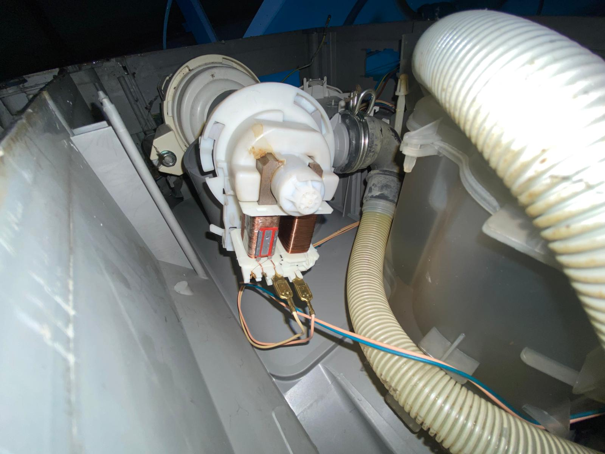

Pendik ve yakın çevre
Orhangazi, Kaynarca, Yenişehir, Şeyhli, Esenyalı, Fevzi Çakmak gibi bölgelerde hizmet uygunluğunu telefon veya WhatsApp üzerinden sorabilirsiniz.
Pendik ve çevresinde buzdolabı, çamaşır makinesi, bulaşık makinesi, kurutma makinesi, klima ve diğer ev cihazları için teknik destek talebinizi iletebilirsiniz.



Orhangazi, Kaynarca, Yenişehir, Şeyhli, Esenyalı, Fevzi Çakmak gibi bölgelerde hizmet uygunluğunu telefon veya WhatsApp üzerinden sorabilirsiniz.
Cihaz türü, marka-model ve arıza belirtisini ileterek uygunluk ve planlama hakkında bilgi alabilirsiniz.
☎ 0542 891 22 25Telefon veya WhatsApp üzerinden cihaz türünü, marka-modelini ve arıza belirtisini paylaşabilirsiniz.